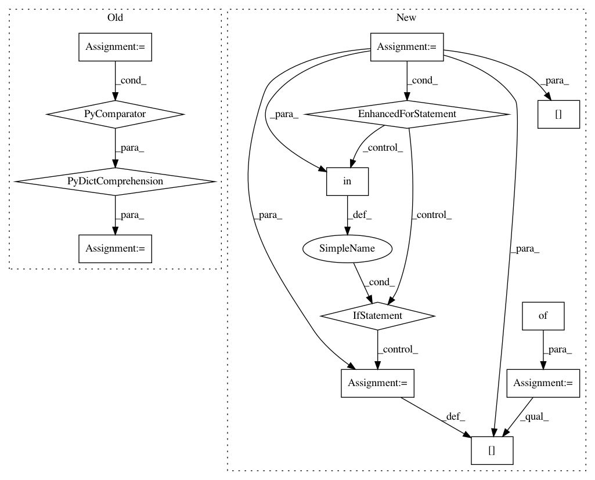

441a175deaa5812c086cdb8a3939d51d39f5a7ae,nussl/deep/train/trainer.py,Trainer,setup_loss,#Trainer#Any#Any#,89
Before Change
def setup_loss(self, loss_functions, output_target_map):
self.output_target_map = output_target_map
self.loss_dictionary = {
target: (loss_functions[fn.upper()].value(), float(weight))
for (fn, target, weight)
in self.options["loss_function"]
}
self.loss_keys = sorted(list(self.loss_dictionary))
@staticmethod
def build_model(model):
After Change
def setup_loss(self, loss_functions, output_target_map):
self.output_target_map = output_target_map
self.loss_dictionary = {}
for (_fn, target, weights) in self.options["loss_function"]:
if "PIT" in _fn.upper():
loss_fn = _fn.split(":")[1]
loss_fn = loss_functions[loss_fn.upper()].value()
fn = loss_functions["PIT"].value(loss_fn)
else:
fn = loss_functions[_fn.upper()].value()
self.loss_dictionary[target] = (fn, float(weights))
self.loss_keys = sorted(list(self.loss_dictionary))
@staticmethod
def build_model(model):
In pattern: SUPERPATTERN
Frequency: 3
Non-data size: 13
Instances
Project Name: interactiveaudiolab/nussl
Commit Name: 441a175deaa5812c086cdb8a3939d51d39f5a7ae
Time: 2020-01-26
Author: prem@u.northwestern.edu
File Name: nussl/deep/train/trainer.py
Class Name: Trainer
Method Name: setup_loss
Project Name: has2k1/plotnine
Commit Name: 329dfcea129f72eb3ea741dfc343d4c28c513c69
Time: 2014-02-06
Author: jasc@gmx.net
File Name: ggplot/ggplot.py
Class Name: ggplot
Method Name: _get_layers
Project Name: AlexsLemonade/refinebio
Commit Name: d03c17c40a2f3874c6b901d75763dcfc1492955c
Time: 2018-03-16
Author: rich@anomos.info
File Name: foreman/data_refinery_foreman/surveyor/sra.py
Class Name: SraSurveyor
Method Name: gather_run_metadata